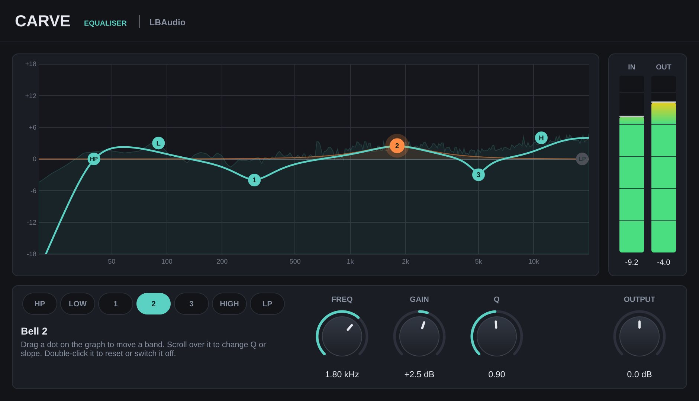

EQ plugin · VST3 & AU
Carveby LBAudio
A seven-band EQ you play with your mouse: drag the dots on a live spectrum and hear the change as you move.
Instant download. Any local VAT is worked out at checkout. Or get all five plugins in the bundle.
- VST3
- AU
- Windows
- macOS
- Linux
- 0 samples latency

Hear it on a real beat
A beat by LBAudio, run through Carve at three settings. Each version is matched to the original's loudness, so you hear the tone change, not a volume boost. Flip between them while it plays.
Cuts the low-mid mud that builds up around the 808, then lifts the hats and snare with a bell and an air shelf.
Shape it by eye
Seven bands, one graph. Click a band to see its knobs, or skip the knobs and work straight on the curve.
Drag, scroll, double-click
Drag a dot to set frequency and gain. Scroll over it to change Q, or the slope of a pass filter. Double-click to reset it or switch a filter on or off.
A live spectrum underneath
See where the energy in your track sits while it plays, and exactly where each move lands.
What you see is what you hear
The curve is computed from the same filters that process your audio, so it's exact, not a sketch.
The controls
Two shelves, three bells and two pass filters cover everything from clean-up to tone shaping. Changes glide smoothly, so automation never clicks. Double-click any knob to reset it, or click a value and type one in.
| Control | Range | What it does |
|---|---|---|
| High-pass | 10 Hz to 1 kHz | Removes rumble and low end you don't need. Slope 12, 24 or 48 dB per octave. Switch it on by double-clicking its dot. |
| Low shelf | 20 Hz to 1 kHz, ±18 dB | Adds or removes weight below the frequency you set. |
| Bells 1–3 | 20 Hz to 20 kHz, ±18 dB | Boost or cut around a frequency. Q from 0.1 (broad) to 18 (surgical). |
| High shelf | 1 to 20 kHz, ±18 dB | Brightens or softens everything above the frequency you set. |
| Low-pass | 1 to 22 kHz | Rolls off the top end. Slope 12, 24 or 48 dB per octave. |
| Output | ±18 dB | Level after the EQ, for fair before-and-after comparisons. |
Where to start
Four starting points. Set these, then adjust by ear.
-
Clean up the low end
HP 30–40 Hz, 24 dB/oct · bell −2 to −4 dB at 200–350 Hz
Takes out rumble and the low-mid mud that builds up around kicks and 808s.
-
Vocal presence
HP 80–100 Hz · bell +2 dB at 2.5–4 kHz · high shelf +2 dB at 10 kHz
Brings a vocal forward without turning it up, and adds air on top.
-
Make room for the kick
Bell −3 dB at 50–70 Hz, Q 2 (on the bass)
A narrow dip where the kick's thump lives lets both sit in the low end.
-
Old radio effect
HP 350 Hz and LP 3.8 kHz, 48 dB/oct · bell +6 dB at 1.5 kHz
The classic small-speaker sound for intros, breakdowns and ad-libs.
Specs
One download for each system. No iLok, no account and no activation.
- Formats
- VST3 on Windows, macOS and Linux. Audio Unit (AU) on macOS.
- Windows
- Windows 10 or later, 64-bit.
- macOS
- macOS 10.13 or later. Runs natively on Apple Silicon and Intel.
- Linux
- 64-bit x86 (x86-64).
- Hosts
- Any DAW that loads VST3 or AU plugins, such as Ableton Live, FL Studio, Cubase, Reaper, Studio One, Bitwig and Logic Pro. Not available for Pro Tools (AAX).
- Latency
- 0 samples
- Bands
- Seven: high-pass, low shelf, three bells, high shelf, low-pass.
- Filters
- Minimum-phase (analogue-style) filters, with 12, 24 or 48 dB/oct pass filters.
- Channels
- Mono or stereo.
Questions
Anything else? Email support@lbaudio.co.uk.
How do I install it?
Unzip the download and copy Carve.vst3 into your VST3 folder: C:\Program Files\Common Files\VST3 on Windows or ~/Library/Audio/Plug-Ins/VST3 on a Mac. Logic users also copy Carve.component into ~/Library/Audio/Plug-Ins/Components. Then rescan plugins in your DAW. The zip includes these steps in INSTALL.txt.
How many computers can I use it on?
All the computers you personally own or use. See the licence agreement for the details.
Can I use it on commercial releases?
Yes. The music you make with Carve is entirely yours, with no royalties or credits owed.
Do updates cost anything?
No. Updates to Carve version 1 are free for everyone who bought it.
What if it doesn't work on my system?
Get in touch within 14 days of buying. If we can't get it working, you get a full refund. See the refund policy.
Does it work in Pro Tools?
Not yet. Pro Tools only loads AAX plugins, and Carve is VST3 and AU.
Is it a linear-phase EQ?
No. Carve is a minimum-phase EQ, like most mixing EQs and analogue desks, which is why it has zero latency and no pre-ringing on transients.
Carve
VST3 & AU for Windows, macOS and Linux. Instant download. Or get all five plugins in the bundle.